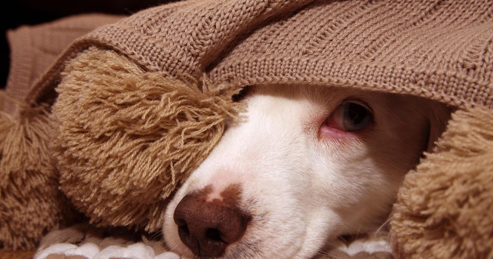

Tips to help dogs during fireworks on the Fourth of JulyThe Fourth of July may be an exciting day for people across the U.S., but it can be a very stressful day for dogs. Nearly one-in-five lost pets goes missing after being scared by the sound of fireworks, thunderstorms or other loud noises, according to the American Society for the Prevention of Cruelty to Animals. Why do fireworks scare dogs? The loud noises can be harsh to a dog's ears, according to Bond Vet. The booming sounds can be perceived as a threat and trigger dogs' fight-or-flight response, according to Veterinary Specialists of the Rockies. Dogs can hear a range of sounds that humans cannot hear. Even everyday noises, such as a vacuum cleaner, can be distressing for a dog because it sounds louder to them than it does to a human. The unpredictable nature of the noises can scare dogs, according to the University of Pennsylvania School of Veterinary Medicine. "As humans, we understand and expect the annual tradition of fireworks, particularly around the 4th of July, but this concept is foreign to our dogs, and many are genuinely frightened if they are suddenly exposed to the loud sounds and scary sights associated with fireworks," Dr. Sandra Mitchell, a veterinarian at Animal Medical Associates in Saco, Maine, told pet site Chewy. What can I do to help my dog with fireworks? The ASPCA, Rover, the American Kennel Club, Purina and PetMD have a slew of tips for keeping your pet calm. They suggest: - Do your best to tire your dog out before the fireworks start. - Keep your dog inside during fireworks displays. Keep curtains or blinds closed. - There are anti-anxiety medications you can purchase for your dog. - Distract your dog with high-value treats. Try putting the treats in puzzle toys so your dog can focus on something other than the fireworks. - Play calming music or put on white noise or the TV. - Leave your dog's crate door open. While dogs may seek out the safety of a crate, they may panic, try to run out and injure themselves on a closed door. - Don't leave a scared dog home alone during fireworks. - Sitting close to your dog and offering quiet words of reassurance can help. - There are earmuffs made specially for dogs, but those are best introduced to a dog gradually in advance of fireworks. - Dog owners can also try training their pets to deal with scary noise, but this is also something that needs to be done in advance. Owners can play fireworks noises at a low level for a brief time while treating their dog. Repeat the process over time. Once your dog is comfortable, you can gradually turn up the sound for future training sessions. Are there any other Fourth of July concerns for dogs? Many of the foods people commonly enjoy for the holiday can be dangerous for dogs. "Veterinarians tend to see an increase in visits in the summertime from dogs who've eaten ribs, corn on the cob, and skewers," Rover advises. "Make sure to keep food scraps and trash away from your pet by discarding them as soon as you're finished." Keep potato, macaroni and pasta salad away from pups, the pet site recommends. Most of the salads contain onions, which can be toxic to dogs. While grilling is a popular activity on the Fourth of July, avoid giving your dog full fat hamburger. Fatty and salty meat can cause severe gastrointestinal upset for a dog. Corn on the cob can also be a cause for concern. Large pieces can cause obstructions. for more features. |
 |